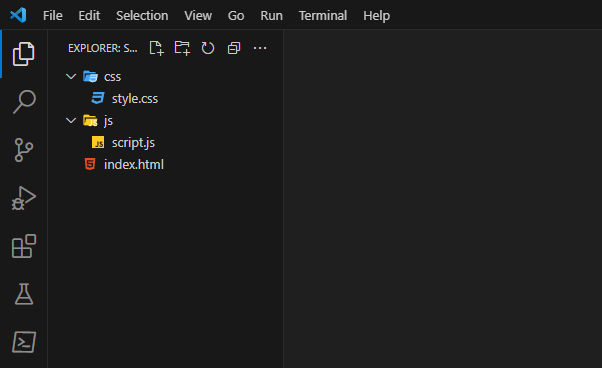
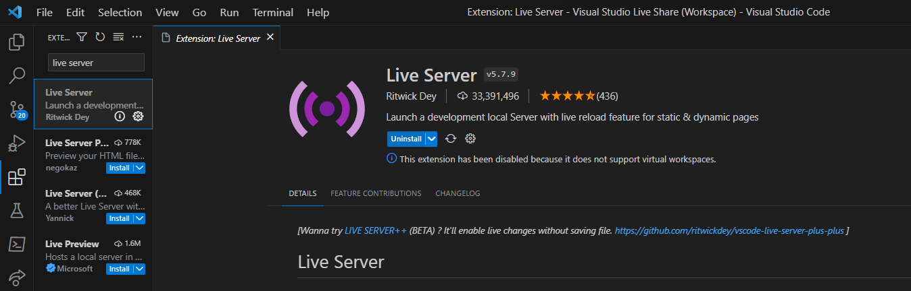

Voor we van start kunnen gaan...
Voorbereiding 1: Visual Studio Code installeren en mappenstructuur
downloaden
Download VSC via
deze link. VSC
of Visual Studio Code is een teksteditor die specifiek ontworpen is
voor het bewerken van de broncode van computerprogramma's door
programmeurs, hiermee gaan we dus werken!

Voorbereiding 2: Download de mappenstructuur via
deze link
Deze mappenstructuur bevat de basis voor het maken van een website.
De mappenstructuur bevat de volgende mappen:

Voorbereiding 3: Installeer de live server extensie
De live server extensie zorgt ervoor dat je de website kan bekijken
in je browser. Dit is handig omdat je dan direct kan zien of de code
die je schrijft werkt.

Start de live server door rechtsonder de blauwe balk te klikken op
"Go Live", je standaard browser zal nu gestart worden!
1.4 Open de mappenstructuur in VSC
Nu kan je terug naar je startpagina in VSC, daar staat onder "start"
het icoontje van een mapje met de tekst "open". Klik hier nu op en
selecteer de gedownloadde mappenstructuur vanaf de locatie waarop je
hem hebt opgeslagen.
Stap 3: Voeg wat CSS toe
Voila, onze basis staat er! Enkel ziet er nog niet zo mooi uit. We
gaan wat styling toepassen!
We voegen een achtergrondkleur toe, stylen onze lettertype qua
grootte, vorm, kleur enzovoort. Probeer eventueel zelf om wat dingen
zelf aan te passen om te zien wat je krijgt als resultaat. Zo kan je
met groottes van lettertypes (in px) of met de kleur van je
achtergrond spelen.
Stap 5: Voeg de keuzes toe
De volgende stap is de keuzes toevoegen tussen blad, steen of
schaar. Aangezien we er later op moeten klikken, maken we gebruik
van "knoppen" of "buttons"
Ook hier zie je dat er weer classes worden gebruikt voor de stijl en
id's voor de functionaliteit als we straks echt beginnen
programmeren.
Zijn we nu nog niet aan het programmeren dan?
coderen is het omzetten van instructies in code. Coderen kan ook
verwijzen naar het proces van het creëren van een ontwerp of
lay-out (CSS, HTML)voor een website of applicatie. terwijl
programmeren gaat over het bedenken van de logica (JavaScript) van
een programma en het schrijven van code om die logica uit te
voeren. Hoewel deze termen vaak door elkaar worden gebruikt, is
het belangrijk om te onthouden dat ze niet precies hetzelfde
betekenen en dat ze in verschillende contexten kunnen worden
gebruikt.
Stap 7: Het spel laten werken
Javascript
We voegen een constante toe. Deze zal altijd dezelfde waarde hebben.
Voeg tussen de aanhalingstekens je eigen naam toe!
De onderste lijn gaan we gebruiken om jouw naam vanuit de JavaScript
toe te wijzen aan het stukje HTML dat we daarnet die bepaalde id
hebben gegeven.
Sla de code op en je ziet je naam verschijnen op je scherm!
Elementen aanspreken
Nu gaan we alle HTML elementen selecteren via zogenaamde
DOM-manipulatie. Simpel uitgelegd selecteren we HTML elementen met
een bepaalde id zodat we er vanuit JavaScript dingen mee kunnen
doen.
Levens aanspreken
Wanneer dat gebeurd is kunnen we voor het eerst een functie
toevoegen. We maken een functie "toon_levens". Deze functie gaan we
daarna toepassingen op de aan te spreken elemnten.
Levens tonen
Vervoglens gaan we bepalen hoeveel levens we hebben. In dit
voorbeeld kiezen we voor 5, maar je kan dit zelf ook wijzigen.
In tegenstelling tot daarnet werken we nu met een "let" i.p.v. met
een "const". Dit omdat het geen constante is maar omdat het variabel
kan zijn.
Toon afbeeldingen wanneer op een knop geklikt wordt
Ons spel ziet er nog wat leeg uit. Voeg drie afbeeldingen toe voor
blad, steen en schaar om het wat levendiger te maken. Je kan ook
eigen afbeeldingen zoeken vanop het internet en de url hier plakken
als je dat wenst.
// We voegen een functie toe om de afbeeldingen te tonen van blad,
steen of schaar wanneer we op desbetreffende knop klikken. Op
datzelfde moment zal de computer een random afbeelding van blad,
steen of schaar tonen. De afbeeldingen kan je bovenaan dit bestand
aanpassen.
Er gebeurde nog niks? We moeten de functie nog toepassen wanneer we
op de corresponderende knop klikken
Onderaan deze code snippet staan nog 3 lijnen code. Als we deze
toevoegen aan ons script dan voegen we een zogenaamde EventListener
toe. Zoals de naam suggereert, luistert deze naar een bepaald
evenent. Als deze voorvalt, dan zal er iets gebeuren. In dit geval
wordt er dus een functie aangesproken vanaf er geklikt wordt.
Ga het gevecht aan, doe iets met he blad, de steen of de schaar
Tijd om in actie te schieten. We schrijven nu de blad_steen_schaar
functie om ons spel verder tot leven te wekken.
We werken met zogenaamde if, else statements. Dit wilt zeggen: als
het ene voorvalt, dan is het andere van toepassing (of vice versa)
Nog enkele verduidelijkingen m.b.t. deze functie:
-
=== betekent dat het strikt gelijk is. De keuze van een speler
is dus gelijk aan bijvoorbeeld blad.
-
&& wilt zeggen dat beide operatoren gelijk moeten zijn. Deze
regel code werkt dus enkel als beide factoren tussen de haakjes
van toepassing zijn.
- De -1 wilt zeggen dat er een leventje verdwijnt.
Opnieuw zien we nog geen resultaat aangezien we de functie moeten
oproepen, dit doen we in onze 'vooruitgang' functie
Zoek de 'vooruitgang' functie en pas de blad_steen_schaar functie
hieraan toe om te kijken wie er wint.
We zien geen feedback? Dat komt omdat we nu de levens moeten updaten
met dezelfde functie die we in het begin gebruikten.
Om aan te tonen wie er wint, voegen we eerst nog een aantal
elementen toe aan ons HTML en ook wat styling in onze CSS
We stijlen nu onze levens, de speler, het speeldveld en alle andere
zaken die we nog geen CSS hadden meegegeven.
Daarna passen we een nieuwe functie toe om aan te tonen wie gewonnen
is
Met de functie 'einde_spel' doen we exact wat de naam van de functie
suggereert. De functie krijgt 2 argumenten mee: de levens van de
speler en de levens van de computer.
Ook hier maken we weer gebruik van de if-else statements.
De functie 'verberg_keuzes' zorgt ervoor dat onze keuzeknoppen
verdwijnen wanneer er een winnaar is. Gelukkig hadden we deze klasse
al gestyled in onze CSS in de vorige stap.!
Opnieuw, het werkt niet? Jawel, maar we moeten deze controle ook in
onze vooruitgang steken.
Een nieuw spel starten? We voegen eerst een knop toe hiervoor aan
ons spel
Even terug naar onze HTML. We voegen een button toe om het spel
opnieuw op te starten.
We moeten eerst de knop aanspreken en voegen ook nog 2 variabelen
toe om gemakkelijk hetzelfde aantal levens te gebruiken
We voegen de reset functie toe
En natuurlijk moeten we de functie aan de knop koppelen